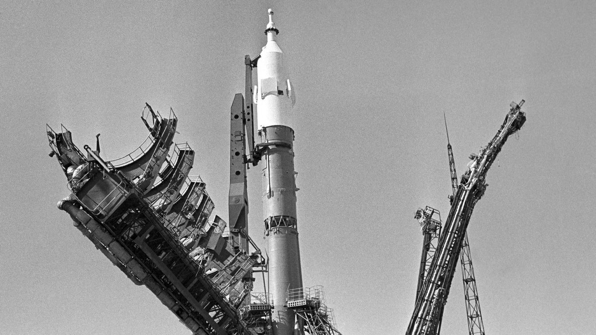

A magyar űrhajózás története az 1970-es években kezdődött, amikor Magyarország csatlakozott a szovjet Interkozmosz programhoz. Ez a nemzetközi együttműködés lehetőséget biztosított a kisebb szocialista országoknak, hogy részt vegyenek az űrkutatásban. Magyarország örömmel kapcsolódott be az űrhajózási programba, hiszen ez kiváló lehetőséget jelentett a tudományos fejlődésre és az ország technológiai képességeinek bizonyítására a hidegháború idején. Az együttműködés gyümölcseként számos magyar mérnök és tudós dolgozott a szovjet űrprogramban. Kezdetben főként elméleti kutatásokkal és földi kísérletekkel járultak hozzá a programhoz, de a magyar szakemberek hamarosan aktívan részt vettek az űreszközök fejlesztésében is. Ezek az első lépések rakták le a magyar űrkutatás alapjait, és bizonyították, hogy egy kis ország is képes jelentős hozzájárulást nyújtani az emberiség egyik legnagyobb kalandjához.
A magyar űrhajózás történetének kétségkívül legfényesebb fejezete Farkas Bertalan űrutazása volt. 1980. május 26-án a Szojuz-36 fedélzetén Farkas lett az első és mindmáig egyetlen magyar űrhajós, aki a világűrbe jutott. A küldetés során Farkas Bertalan nyolc napot töltött a Szaljut-6 űrállomáson, ahol számos tudományos kísérletet hajtott végre.
Az űrutazás során Farkas Bertalan többek között biológiai, orvosi és anyagtudományi kísérleteket végzett. A Dóza dozimetriai kísérlet például a kozmikus sugárzás mérését szolgálta, míg az Interferon kísérlet során az interferon fehérje előállítását vizsgálták súlytalanság körülményei között. Ezek a kísérletek nemcsak a magyar tudományos közösség számára szolgáltattak értékes adatokat, hanem az egész nemzetközi űrkutatás számára is. Farkas Bertalan hazatérése után nemzeti hőssé vált, és a mai napig a magyar űrhajózás ikonikus alakja, aki bizonyította, hogy a magyarok is képesek csillagokat érinteni.
Farkas Bertalan és Valerij Kubaszov 1980. május 26-án, moszkvai idő szerint 21 óra 20 perckor, magyar idő szerint 20 óra 20 perckor, indult a világűrbe a Szojuz–36 űrhajó fedélzetén. Magyarország ezzel az űrutazással a nemzetek sorában hetedikként lépett ki a világűrbe. Az űrhajó május 28-án kapcsolódott össze a Szaljut–6 űrállomással, ahol a személyzet Leonyid Popov és Valerij Rjumin szovjet űrhajósok fogadták őket.